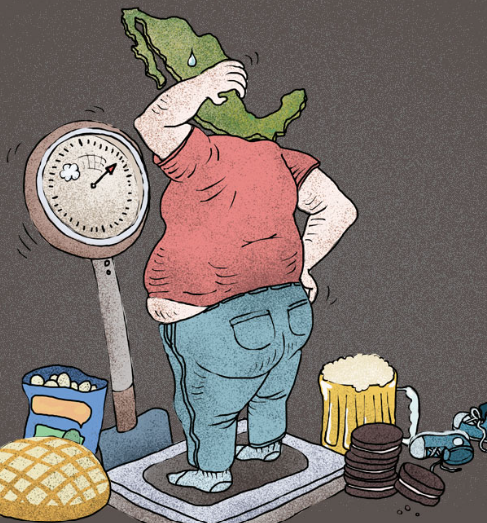
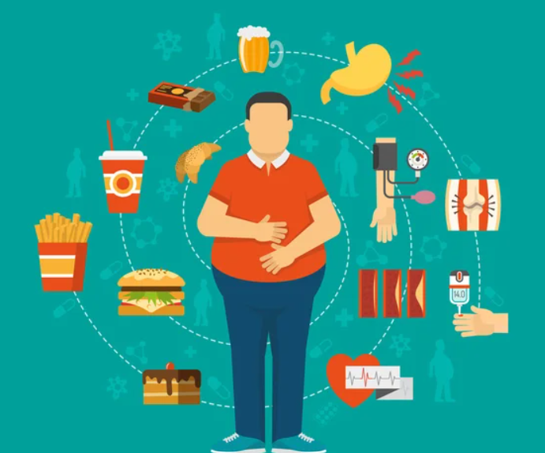

DREAM HEALTHY
la salud es prioridad
la salud es prioridad
La obesidad es una enfermedad crónica caracterizada por una acumulación excesiva de grasa corporal, lo que aumenta el riesgo de diversas enfermedades
diabetes tipo 2 y enfermedades cardíacas. Se diagnostica comúnmente usando el índice de masa corporal (IMC), donde un IMC de 30 o más se considera obesidad.
Las causas incluyen factores genéticos, hábitos alimenticios poco saludables y un estilo de vida sedentario. Para prevenirla, se recomienda una dieta equilibrada y ejercicio regular.
La obesidad en México es un problema de salud pública significativo. Aproximadamente el 70% de los mexicanos tiene sobrepeso o sufre de obesidad.
Esta condición está asociada con diversas enfermedades crónicas como la diabetes, enfermedades cardiovasculares, y ciertos tipos de cáncer
En términos de prevalencia, el 39.1% de los adultos tiene sobrepeso y el 36.1% padece obesidad. La obesidad ha aumentado considerablemente en las últimas décadas,
afectando a personas de todas las edades y niveles socioeconómicos
México enfrenta altos niveles de obesidad debido a una combinación de factores como el consumo de alimentos ultraprocesados, el sedentarismo,
ambientes obesogénicos, factores socioeconómicos, genética y limitaciones en el sistema de salud.
La obesidad puede tener graves consecuencias para la salud, incluyendo un mayor riesgo de desarrollar enfermedades crónicas como diabetes tipo 2,
enfermedades cardíacas, hipertensión, apnea del sueño y ciertos tipos de cáncer. Además, puede afectar la calidad de vida, causando problemas de movilidad,
dificultades respiratorias y afectando la salud mental, como la depresión y la baja autoestima.